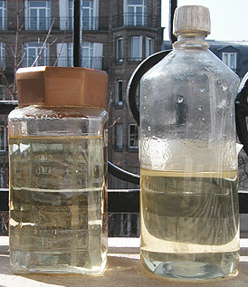
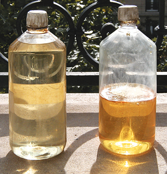
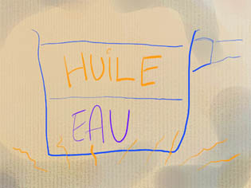

Cuisson
et cuisine
des huiles
La meilleure préparations des huiles
à peindre
:
"Claircer" l'huile, c'est-à-dire
l'exposer au
rayonnement solaire le plus longtemps possible, dans un lieu dégagé, lumineux.
Par la suite, la clarté acquise pourra être partiellement perdue par un
séjour prolongé dans l'obscurité, mais même dans ce cas, elle restera plus
claire qu'une huile n'ayant pas subi ce traitement (cf. expérimentations de
Xavier de Langlais).
Le processus est donc bien irréversible ; il se distingue
en cela de la réversibilité du jaunissement de l'huile de lin par exposition
à la lumière (solaire, directe ou indirecte, ou même non solaire), lié
seulement à sa photosensibilité.
Cela est dû, semble-t-il, à la lente action des rayons ultraviolets, qui
pulvérisent littéralement les impuretés. Pour cette raison, le mois de mars
est le plus propice car le rayonnement solaire est plus riche en UV dans cette
période où les huiles exposées connaissent un accroissement sensible de
limpidité.
Temps minimal d'exposition : dix mois environ (dont le mois de mars
et la belle saison)
pour une huile décolorée, quinze mois au moins pour une huile de lin clarifiée ou
précuite en atelier.
Ces durées doivent tenir compte de l'état de la couche d'ozone, y compris
en France - et bien plus en Australie, au Chili et en Argentine -, mais aussi
des périodes de maximum d'activité solaire (voir Activité
solaire in Références).
Les temps d'exposition proposés ci-dessus tiennent déjà compte du
rétrécissement normal de la couche d'ozone par rapport à l'époque de
l'invention du procédé : 15% de moins. La
durée généralement retenue est d'un an. Comme on le verra plus loin, cela
dépend du type d'huile.

A gauche, une huile de lin décolorée exposée sur un balcon
parisien depuis neuf mois
(dont le mois de mars). A droite, une
huile de lin clarifiée claircée depuis deux mois.
Juger de la différence des teintes et de la clarté vers le bas des flacons !
Note : les médiums et vernis au mastic
pourraient être purifiés de la même façon.
Note 2 : certains auteurs préconisent la fermeture du récipient
par une plaque de verre simplement posée. Une fermeture volontairement
imparfaite. Cependant, le vent et la pluie peuvent réellement provoquer des
catastrophes. Aussi conseillons-nous une fermeture hermétique, à la condition
d'ouvrir le flacon tous les trois jours environ. En effet, l'apport d'oxygène
est indispensable car il autorise une sorte de "pré-siccativation". L'huile est
toujours prête à siccativer. Cela est très sensible après une période de l'ordre
de deux semaines : un récipient en plastique peut se déformer sous l'effet de la
baisse de pression et à l'ouverture, l'effet de succion est manifeste.
Un an plus tard, les résultats comparés sont instructifs :

Les positions sont inversées : l'huile clarifiée est à
gauche, la décolorée à droite.
On aurait pu croire, comme l'annoncent fabricants et manuels
de peinture, que l'huile clarifiée aurait peu changé en présence de lumière.
Ce qui s'est produit en fait, c'est qu'elle a mis nettement plus de temps à
réagir que l'huile décolorée, mais au bout d'un an elle est plus claire et
continue encore à évoluer ! Le temps d'exposition optimal pourrait dépasser
douze mois.
Au-delà de deux ou trois ans, attention, le résultat est
désastreux ! Concernant les huiles décolorées, on parvient à des résultats comme
ceux-ci :

A gauche, une huile exposée depuis trois ans. Elle est encore
très claire mais commence légèrement à jaunir. Celle de droite est exposée
depuis près de quatre ans ans. Elle a totalement changé d'aspect depuis déjà
plus de six mois. La surface forme une sorte de croûte, le dessous est devenu
trouble et a jauni considérablement. Elle est en plein processus de
siccativation/polymérisation. Peut-être possède-t-elle certaines vertus, à
l'instar d'une standolie, mais
elle ne peut plus être considérée comme une huile à peindre. Noter que l'huile
clarifiée donne le même résultat pour des durées du même ordre.
Conclusion
pour l'huile clarifiée comme l'huile
décolorée, ne jamais dépasser deux ans et demi d'exposition
Une exposition de douze à dix-huit mois semble raisonnable en
tenant compte de toute façon du quotient UV des lieux et de
l'activité solaire.
Huiles
claircées et cuisson
La cuisson des huiles, procédé délicat, n'avait pas atteint le
niveau de contrôle de l'industrie contemporaine lorsque les maîtres flamands
s'y essayèrent. Ils n'hésitèrent pas à travailler à des températures où
les huiles commençaient à se polymériser. C'était un véritable cuisson -
non un réchauffement - qui a fait naître le terme ambigu "huile
cuite" (lire texte in
Les autres huiles).
L'huile de lin bout à 387°C. Les
traitements actuels permettent d'atteindre 380°C exactement, (mais plus souvent
290°C pendant
6 à 8 heures). Or, le seul moyen
de contrôle dont disposaient les peintres anciens était la plume de poulet
jetée dans l'huile, qui ne devait pas friser, ou bien la gousse d'ail, introduite
en début de cuisson, qui également ne devait pas friser ! Pourtant, la qualité des
peintures obtenues était parfaite ; une visite au Louvre suffit pour s'en
convaincre.
Les anciens maîtres, qui pour la plupart cuisaient leurs huiles, préféraient
les claircer après cuisson. Ce point est sujet à questionnement :
> pensaient-ils purifier par le soleil les scories apparues
à la suite de la cuisson ?
Certainement !
L'huile de lin jaunit à la cuisson à partir d'une certaine température. Il y a donc bien
un intérêt, effectivement, à claircer l'huile après. Même
rendue moins photosensible par ce procédé, elle perdra en bonne partie sa
coloration (voir photos ci-dessus).
Les
cuissons
Voir aussi L'huile de lin cuite
in Les autres huiles
Introduction
D'abord, il faut convier ici une petite polémique récurrente sur la matière du récipient
à employer pour la cuisson :
* différents peintres s'accordent à rappeler que les anciennes recettes
mentionnent toujours l'emploi de récipients en terre
* certains autres, sans démentir l'intérêt de la tradition, mettent en
avant un argument de poids : certaines terres peuvent se fendre, ce qui peut
provoquer une catastrophe au cas où l'huile prendrait feu.
Nous préférons nous rendre à ce dernier argument, d'autant plus que
certaines casseroles transparentes - ou autres récipients - permettent de mieux
contrôler la cuisson.
Plus important encore sur le plan de la sécurité :
*
nous déconseillons radicalement l'emploi de réchauds
produisant une flamme (gaz)
* le traitement à forte chaleur est difficile à
mettre en oeuvre et à contrôler. A une température trop élevée, les
vapeurs deviennent dangereuses. Informez vous impérativement auprès des
pompiers sur les précautions à prendre.
* au cas où de l'huile serait renversée, nous conseillons aux peintres de ne jamais jeter
de l'eau sur de l'huile bouillante.
Donc, nous ne conseillerons pas à nos chers visiteurs de s'essayer à la
fabrication de véritables huiles cuites à l'ancienne et autres standolies "à la
flamande". Le sujet est cependant abordé, pour information, dans le paragraphe
ci-dessous intitulé Cuisson à feu
direct, vers "l'huile cuite" et la standolie.
Intérêt des cuissons :
* incorporation d'adjuvants (siccatifs,
cires, etc.)
* bonification de l'huile de lin, devenant plus visqueuse et plus stable à
la lumière. Mais il ne faut pas se leurrer : le simple traitement au
bain-marie ou par barbotage ne fournira pas de résultats très spectaculaires, voire aucun
résultat !
* un satiné plus net, plus fin. La remarque ci-dessus est également
valable sur ce point.
* une siccativité légèrement supérieure (si les températures sont
assez élevées), même sans adjonction de produits siccatifs sauf
pour les cuissons trop proches de la température d'ébullition car le
phénomène peut s'inverser : la standolie, qui
est certainement l'huile la plus cuite, est moins siccative qu'une huile
crue. Par contre, une huile cuite deux ou trois heures à une température
intermédiaire peut gagner en siccativité. Cette différence nous signale la
présence de deux processus différents :
* l'incorporation d'oxygène (siccativation) favorisée par un excitation
moléculaire modérée due à la chaleur
* la polymérisation, c'est-à-dire la liaison entre molécules insaturées de
même nature, à température plus élevée. Elle peut s'opérer indépendamment de
l'intégration d'oxygène (comme dans le cas de la standolie).
Inconvénients :
* jaunissement-brunissement.
Pour obtenir un véritable changement de comportement de l'huile, il faut la
cuire réellement. Mais sans même la faire bouillir, on la fait toujours un peu
brunir. A l'opposé, une cuisson douce, même très prolongée n'altèrera pas la
couleur, mais ne donnera aucun résultat probant (test réalisé au bain-marie
pendant seize heures), c'est à dire aucune amélioration de siccativité,
d'aspect ou de plasticité.
Le principal défaut de la cuisson des huiles semble donc bien résider dans le
fait que l'amélioration obtenue est contrebalancée par une coloration peu
souhaitable.
* risques d'altérer radicalement la qualité de l'huile traitée :
* faire bouillir l'huile l'abîme irréversiblement
* une huile trop polymérisée risque de devenir trop tirante, comme une standolie.
Il n'est cependant pas certain que ce phénomène se produise si la
cuisson est réalisée en présence d'air. On ne se prononcera donc pas !
Remarques
L'accroissement de la siccativité est souvent l'objectif recherché dans la
cuisson des huiles, mais quelquefois à
tort : une huile trop siccative peut favoriser craquelures et plissements. L'emploi de
résines favorisant la réticulation
tridimensionnelle peut faciliter une siccativation homogène. Les siccatifs au
plomb, aux effets moins foudroyants que le manganèse (contenu par exemple dans le siccatif
de Courtrai brun) ou le cobalt, sont conseillés pour la même raison.
L'huile de noix (voir huile
noire, ci-dessous) et l'huile
de lin sont les huiles les plus couramment cuites, mais certains traitements
très particuliers des pigments peuvent nécessiter un broyage dans une huile
de tournesol cuite, par exemple (voir blanc
de Jupiter).
Modes de cuisson
La cuisson indirecte (barbotage, bain-marie) ne
fournit évidemment pas les résultats obtenus par les procédés industriels
(étuves spéciales), les
températures - avoisinant 80°C - restant très éloignées des 290°C ou 380°C
nécessaires à la polymérisation.
La "cuisson douce" ou "réchauffement" est donc
couramment utile dans les
cas de figure suivants :
* incorporation de cires
(opération courte qui peut être effectuée à feu direct car la fusion des
cires témoigne de la température atteinte)
* incorporation de litharge
*
incorporation d'oléorésines
* incorporation de résines solides diluées dans
l'essence (attention, la présence de fortes quantités d'essence implique
des dangers très importants lors de la cuisson) et évaporation de cette
essence.
L'intérêt du réchauffement, outre de faire fondre les cires ou s'évaporer
les essences, est
simplement de faciliter un mélange intime des différents éléments grâce à
l'agitation moléculaire du liquide induit par l'accroissement de la
température. Il n'est aucunement question ici de polymérisation de l'huile.

Cuisson douce par barbotage
Elle n'offre que peu d'intérêt depuis l'invention du
bain-marie.
Pour mémoire, se référer au croquis ci-contre. Le temps de cuisson est en
principe de
deux à trois heures si votre but est l'incorporation d'un agent siccatif.
Un siccatif liquide (type Courtrai) peut être adjoint à froid, avant
cuisson. La litharge (poudre) doit par contre est jetée "à plein
feu". Le temps de cuisson est le même car de toute manière l'essence
contenue dans les produits liquides s'évapore rapidement.
Cuisson douce au bain-marie
Seuls le procédé et le temps de cuisson changent. Pour incorporer un
siccatif, il faut théoriquement trois à
quatre heures, encore a minima.
Cuisson à feu direct,
vers "l'huile cuite" et la standolie
Le principe est encore plus simple que dans les cas précédents : "on
verse dans la casserole bien propre", pour résumer !
Hormis le cas particulier du réchauffement très doux et très court destiné à l'incorporation de cire
ou d'autres adjuvants, il
s'agit généralement dans ce type de cuissons de réaliser une véritable "huile cuite" ou une
standolie.
Il faut insister sur le fait que ce procédé est
DANGEREUX. Nous le déconseillons et nous ne le décrirons que
sommairement, pour mémoire. Si vous souhaitez quand même réaliser ce type
d'expériences, renseignez vous auprès
des pompiers sur les précautions à prendre.
Un thermomètre adapté est indispensable car l'huile ne
doit jamais bouillir. Restez aux environs de 290°C. Il faut se méfier
des émanations.
Si vous laissez cuire pendant 6 ou 8
heures, vous obtenez une standolie (qui ne peut être utilisée comme liant pur)
à condition de vous arranger pour éliminer l'air du
récipient. Une heure à 290°C (en présence d'air)
est une durée raisonnable pour une huile cuite. Incorporer la litharge dès que
cette température est atteinte.
Comme vous pouvez cuire une huile pure plusieurs fois, n'hésitez pas à
interrompre la cuisson, laisser refroidir quelques heures et contrôler la
viscosité, sans oublier que passé un certain cap, vous perdrez en
siccativité.
Huile
noire
Recette ancienne, c'est une huile de noix
cuite (au bain-marie ou en barbotage, mais pas à feu direct) avec du siccatif
à l'oxyde de plomb (2 à 3%).
Elle peut être utilisée au broyage, mais on l'emploie généralement comme
médium pour les ébauches, les jus allongés de
térébenthine. On peut l'associer à de la cire en
très petite quantité pour figer les coulées ("méthode
vénitienne"). Elle est très siccative.
Lire le texte
dédié à ce produit dans l'article sur les Autres huiles.
Retour
début de page